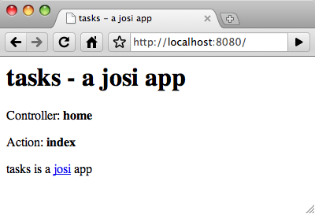
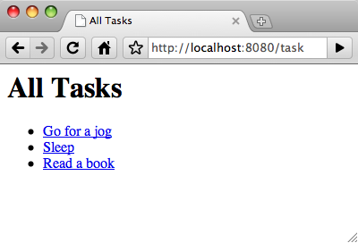
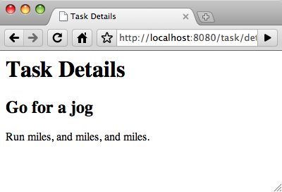
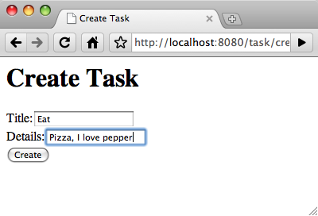
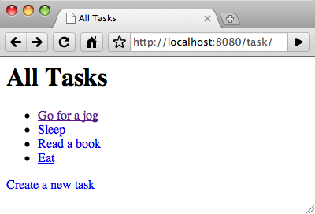
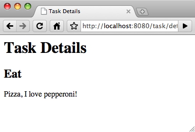

<!DOCTYPE html>

<html>
<head>
  <title>josi - not so sketchy</title>
  <link rel="stylesheet" href="style.css" type="text/css">
  <link rel="icon" href="favicon.ico" type="image/x-icon">
</head>

<body>
  <a id="top">&nbsp;</a>
  <a href="http://github.com/thatismatt/josi">
    
  </a>

  <div id="container">
    <h1 id="title">
      <a href="http://github.com/thatismatt/josi/"></a>
    </h1>
    <div id="description">
      not so sketchy
    </div>
    
    <h2>Creating your first josi app</h2>
    <p>This is a simple introduction to creating a basic <a href="http://nodejs.org/">node.js</a> application using the <a href="http://thatismatt.github.com/josi/">josi</a> web framework. If you follow this tutorial through to the end you will have created a simple tasks application that can be used to create and organise all the things in your busy life. If you prefer to just see the code, the complete source to the tasks app is <a href="http://github.com/thatismatt/josi/tree/master/examples/tasks/">here</a>.</p>
    
    <h3>Prerequisites</h3>
    <p>There is only one prerequisite for this tutorial, and that is node.js. It is assumed that you already have it installed.</p>
    <h3>Installing josi</h3>
    <p>The easiest way to get hold of josi is to clone the git repository on github:</p>
    <pre>$ git clone git://github.com/thatismatt/josi</pre>
    <p>Alternatively you can download a tarball or zip archive, more details <a href="http://thatismatt.github.com/josi/#download">here</a>.</p>
    <p>There is a small executable in the bin directory called <code>josi</code>, it is probably worth aliasing this file so that you can don't have to repeatedly type the full path to the file. Here's a simple way to do this:</p>
    <pre>$ alias josi=&lt;downloadpath>/bin/josi</pre>
    <p>To test that you're up and running type <code>josi</code> and you should see something like:</p>
    <pre>josi 0.2 by Matt Lee - @thatismatt
    Usage:	josi task [opts]	Run the specified task.
          	josi app_name   	Create a josi app called app_name. Alias to "josi create app_name"
    Where task is one of the following: 
    	help		print this message
    	create		create a new josi app or components of an existing josi app
    	run		start the josi web server
    		port - port number for the server to listen on
    	test		run the app's tests
    		suite - the suite to run
    	version		print the version number</pre>
    
    <h3>Creating the app</h3>
    <p>Now that you're all set up you can get started on the creation of your tasks app. To create a josi app you simply type:</p>
    <pre>$ josi tasks</pre>
    <p>This will have created the following directory structure:</p>
    <pre>tasks
 |-app.js
 |-controllers
 |  '-home.js
 '-views
    |-master.html
    '-home
       '-index.html</pre>
    
    <h3>Starting the dev server</h3>
    <p>Now, to see what has been auto generated, start the development server. Change directory to the task directory and type:</p>
    <pre>$ josi run</pre>
    <p>Then point your browser at <a href="http://localhost:8080/">http://localhost:8080/</a></p>
    <p>Note: you can start the server listening on a different port by specifying the port number:</p>
    <pre>$ josi run 8081</pre>
    <p>You should see something that looks like this:</p>
    <p></p>
    <p>To stop the server press ctrl-c.</p>
    
    <h3>The app file</h3>
    <p>The story for your josi app starts with the app.js file, here's the contents of that file:</p>
    <pre class="prettyprint">this.init = function() {
  this.router.add(
    // this route matches: /&lt;controller>/&lt;action>/&lt;id>
    /^\/(?:(\w+)\/?)?(?:(\w+)\/?)?(?:([0-9]+)\/?)?$/,
    { controller: 'home', action: 'index' }
  );
};</pre>
    <p>The app module exports an <code>init</code> function. <code>this</code> in the <code>init</code> function is the app module, <code>this.router</code> is the router for this app, this can be overridden. The default router is the <code>ControllerRouter</code>. The <code>add</code> method of the router adds a route. A route consists of a regex and some defaults. Where the first and second captures are mapped to the controller and action respectively. If the regex matches but there are insufficient captures then the defaults are used for the controller and action, which in this case are "home" and "index" respectively.</p>
    
    <h3>A controller</h3>
    <p>A josi controller is a module that exports actions. The home controller in our tasks app is the home.js file in the controllers directory. Here's the contents of that file:</p>
    <pre class="prettyprint">var view = require('josi/actionresults').view;

this.index = function() {
  return view({
    title: 'tasks - a josi app',
    controller: 'home',
    action: 'index',
    description: 'tasks is a &lt;a href=&quot;http://thatismatt.github.com/josi/&quot;&gt;josi&lt;/a&gt; app'
  });
};</pre>
    <p>A josi controller is nothing special, it is just an ordinary module that groups together a set of related actions. In the case of our home controller there is just the one action, <code>index</code>.</p>
    
    <h3>An action</h3>
    <p>A josi action is a function, exported by a josi controller, that returns an action result. The action results are the different ways a josi app can respond to a request. In the case of our home controller's <code>index</code> action it returns a call to <code>view</code> passing in an anonymous object. The call to <code>view</code> means that a view page will be rendered with the anonymous object as the view data. Other action results include: <code>redirect</code>, <code>json</code>, <code>async</code>.</p>
    
    <h3>A view</h3>
    <p>Views are HTML templates that are compiled by a template rendering engine, the default engine is the <code>MicroTemplatingEngine</code>, this default can be overridden in the app file by exporting the <code>templater</code> property. Views are all located in the views folder, and by default the view that's rendered is the one that shares its name with the action and is in the folder that is named the same as the controller. So for our index action on the home controller the view file will be /views/home/index.html. Here's the contents of that file:</p>
    <pre class="prettyprint">&lt;p&gt;Controller: &lt;b&gt;&lt;%= controller %&gt;&lt;/b&gt;&lt;/p&gt;
&lt;p&gt;Action: &lt;b&gt;&lt;%= action %&gt;&lt;/b&gt;&lt;/p&gt;
&lt;p&gt;&lt;%= description %&gt;&lt;/p&gt;</pre>
    <p>Above, <code>&lt;%= controller %&gt;</code> is rendering the value of the controller property of the view data. The rendered view is then inserted into a containing template, called the master template. The master template is the master.html file in the views folder.</p>
    
    <h3>A model</h3>
    <p>As you're probably aware, the M of MVC is for model. Josi has no built in support for generating models or tying them to a database, this is considered the user's responsibility. The domain objects of our app are tasks, for this simple example app they'll be stored in memory as an array. Create a tasks.js file in a folder called models:</p>
    <pre class="prettyprint">var tasks = [];

this.list = function() {
  return tasks;
};

this.get = function(id) {
  return tasks[id];
};

this.save = function(task) {
  if (!task.id) {
    tasks.push(task);
  } else {
    tasks[task.id] = task;
  }
};

// test data
tasks.push(
  { title: 'Go for a jog', details: 'Run miles, and miles, and miles.' },
  { title: 'Sleep', details: 'I love sleep.' },
  { title: 'Read a book', details: 'Read a book by someone famous.' }
);</pre>
    
    <h3>A new controller</h3>
    <p>Next you'll add a controller that will take responsibility for dealing with these tasks. The <code>josi</code> executable can do this for you. Making sure you're back in the root directory of your app, just type:</p>
    <pre>$ josi create controller task</pre>
    <p>This will have created the task controller with an index action, which will list the tasks. You'll also need actions for displaying the details for a task and creating a new task. To add actions to a controller you can just do:</p>
    <pre>$ josi create action task details</pre>
    <p>This will have added the details action to your task controller and created a corresponding view. Do the same for the create action and your task controller should now look like this:</p>
    <pre class="prettyprint">var view = require('josi/actionresults').view;

this.index = function() {
  return view({
    title: 'A josi app',
    controller: 'task',
    action: 'index',
    description: 'This is a &lt;a href=&quot;http://thatismatt.github.com/josi/&quot;&gt;josi&lt;/a&gt; app'
  });
};

this.details = function() {
  // auto generated stuff ...
};

this.create = function() {
  // auto generated stuff ...
};</pre>
    <p>To use the tasks model from within this controller, add a require statement to the top of the file. The response from the index action should display a list of all the tasks, so that's returned in the view data:</p>
    <pre class="prettyprint">var view = require('josi/actionresults').view;
var tasks = require('../models/tasks');

this.index = function() {
  return view({
    title: 'All Tasks',
    tasks: tasks.list()
  });
};

// ...</pre>
    <p>Now just loop over the tasks in the view, outputting their title and a link to their individual details page as you go:</p>
    <pre class="prettyprint">&lt;ul&gt;
  &lt;% tasks.forEach(function(t, id) { %&gt; 
    &lt;li&gt;&lt;a href=&quot;/task/details/&lt;%= id %&gt;&quot;&gt;&lt;%= t.title %&gt;&lt;/a&gt;&lt;/li&gt;
  &lt;% }); %&gt;
&lt;/ul&gt;
</pre>
    <p>The result of this will be at <a href="http://localhost:8080/task">http://localhost:8080/task/</a> and should look like this:</p>
    <p></p>
    <p>Now display those details. Here's the change to the details action:</p>
    <pre class="prettyprint">this.details = function() {
  var task = tasks.get(this.route[0]);
  return view({
    title: 'Task Details',
    task: task
  });
};</pre>
    <p>And view:</p>
    <pre class="prettyprint">&lt;h2&gt;&lt;%= task.title %&gt;&lt;/h2&gt;
&lt;p&gt;&lt;%= task.details %&gt;&lt;/p&gt;</pre>
    <p>Within an action, <code>this</code> is the action context. Giving you access to the route, form and query parameters.The id of the task is matched from the url and available in the route parameters. The details page for the first task will look like this:</p>
    <p></p>
    
    <h3>A new task</h3>
    <p>The create action will have a dual purpose; if called without the title it'll display a form for entering the properties of a new task, otherwise it'll save a new task with the properties entered and redirect to the list of tasks. Here's that action:</p>
    <pre class="prettyprint">var actionresults = require('josi/actionresults');
var view = actionresults.view;
var redirect = actionresults.redirect;
var tasks = require('../models/tasks');

// snip ...

this.create = function() {
  if (this.form.title) {
    tasks.save({
      title: this.form.title,
      details: this.form.details || 'No details.'
    });
    return redirect('/task/');
  } else {
    return view({ title: 'Create Task' });
  }
};</pre>
    <p>And the view:</p>
    <pre class="prettyprint">&lt;form method=&quot;post&quot; action=&quot;/task/create/&quot;&gt;
  &lt;div&gt;
    &lt;label for=&quot;title&quot;&gt;Title:&lt;/label&gt;&lt;input id=&quot;title&quot; name=&quot;title&quot;&gt;
  &lt;/div&gt;
  &lt;div&gt;
    &lt;label for=&quot;details&quot;&gt;Details:&lt;/label&gt;&lt;input id=&quot;details&quot; name=&quot;details&quot;&gt;
  &lt;/div&gt;
  &lt;div&gt;
    &lt;input type=&quot;submit&quot; value=&quot;Create&quot;&gt;
  &lt;/div&gt;
&lt;/form&gt;</pre>
    <p>The task creation will look like this:</p>
    <p>
      
      
      
    </p>
    <p>Congratulations on completing your first josi app!</p>
    
    <h3>What next?</h3>
    <p>I hope you've enjoyed exploring josi so far. The second part of this tutorial, which will cover adding ajax functionality and how to serve static content, will be available soon. In the meantime there are more example apps <a href="http://github.com/thatismatt/josi/tree/master/examples/">here</a> or, if you're interested in contributing to josi, fork it on github. I'd also welcome any <a href="http://github.com/inbox/new?to=thatismatt">feedback</a>.</p>
  
  </div>
  <div id="footer">
    Get the source code on GitHub : <a href="http://github.com/thatismatt/josi/">thatismatt/josi</a>
  </div>
  <script type="text/javascript" src="http://ajax.googleapis.com/ajax/libs/jquery/1.4.2/jquery.min.js"></script>
  <script src="jquery.color.js" type="text/javascript"></script>
  <script type="text/javascript">
    $('a:not(.top)').hover(
      function() {
        $(this)
          .stop(true)
          .animate({ color: '#6AA' }, 250);
      },
      function() {
        $(this)
          .stop(true)
          .animate({ color: '#676' }, 250);
      }
    );
  </script>
  <script type="text/javascript" src="prettify.js"></script>
  <script type="text/javascript">
    prettyPrint();
  </script>
  <script type="text/javascript">
var gaJsHost = (("https:" == document.location.protocol) ? "https://ssl." : "http://www.");
document.write(unescape("%3Cscript src='" + gaJsHost + "google-analytics.com/ga.js' type='text/javascript'%3E%3C/script%3E"));
</script>
<script type="text/javascript">
try {
var pageTracker = _gat._getTracker("UA-16231762-1");
pageTracker._trackPageview();
} catch(err) {}</script>
</body>
</html>
